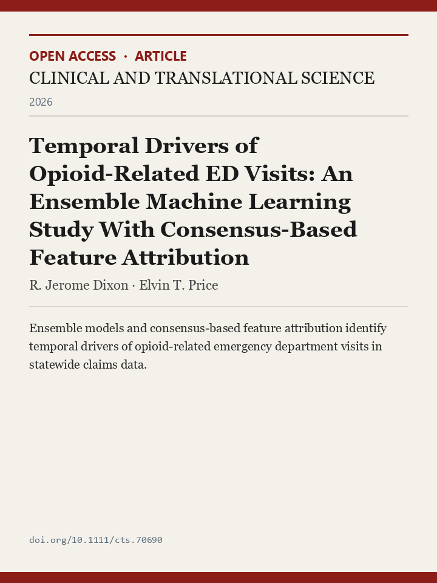
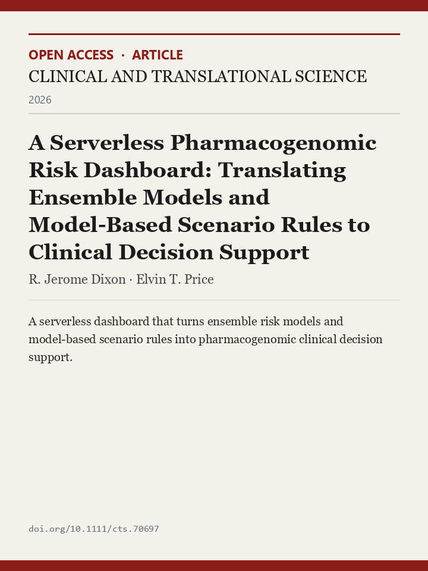
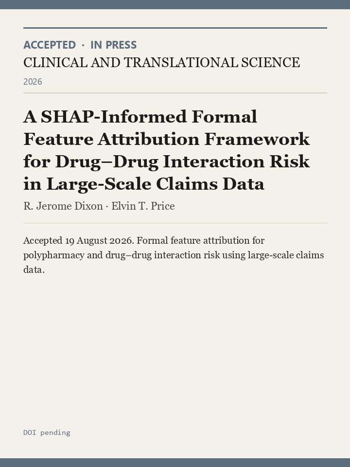

Pharmacogenomics & claims analytics
Virginia Commonwealth University
-

-

-

Surgical simulation & virtual reality
VCU · Old Dominion University
Pediatric heart transplantation
University of Virginia School of Data Science